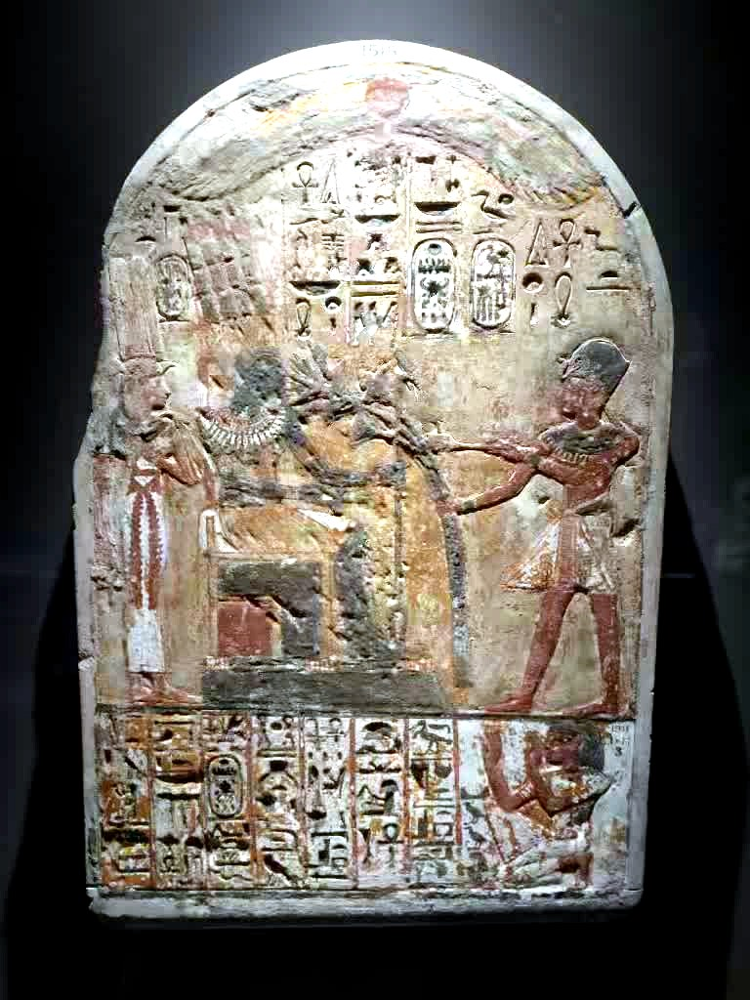
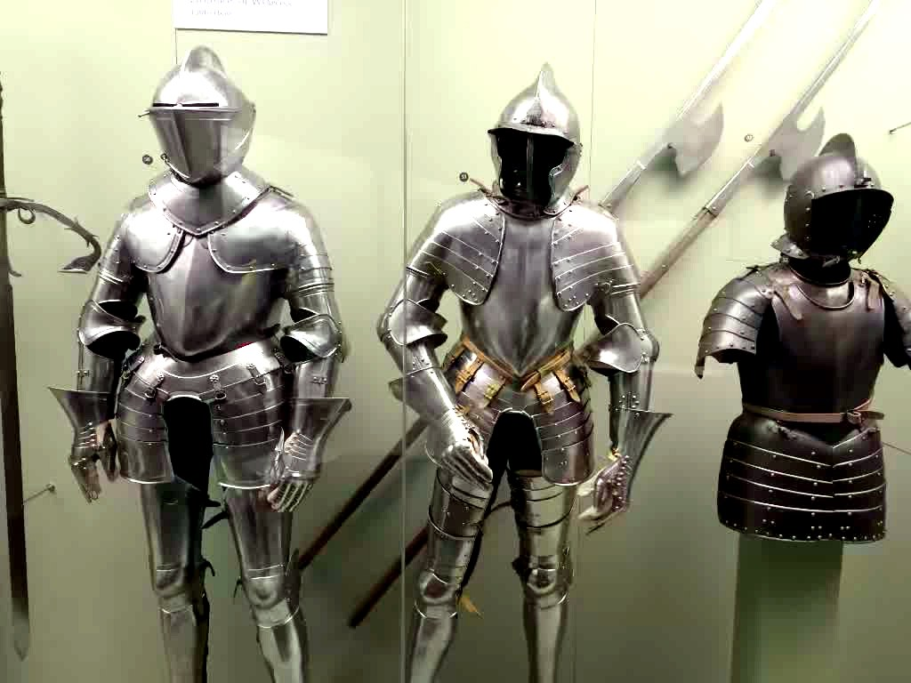

實地走訪作為設計田調
本次參訪中，團隊透過拍照記錄、閱讀展場說明、觀察展品細節與事後討論，整理展覽帶給我們的啟發。由於我們平時關注 DND 角色扮演遊戲與科普類小遊戲，因此這次特別留意展品背後的歷史故事、角色設定、道具邏輯與世界觀建構。
法老身分的多重性
在《埃及之王：法老》展區中，我們印象最深的是法老身分的多重性。法老不只是古埃及的統治者，也同時象徵宗教信仰、政治權力與社會秩序。展場中的雕像、文字、飾品與相關文物，讓我們看見古埃及人對神權、死亡、永恆與秩序的重視。
這些內容也讓我們聯想到遊戲中的角色設計：一位君王可能同時是領袖、戰士、祭司與神明在人間的代表，他的每一個決策都可能影響人民、信仰與國家的未來。若將這些元素轉化成 DND 或科普小遊戲，玩家可以扮演祭司、工匠、守衛或探險者，透過解謎、任務選擇與資源分配，理解古埃及文明如何運作。


兵器不只是攻擊力
接著我們參觀兵器廳。展區中各式刀劍、盔甲、長槍與防具，呈現出不同文化對戰爭、工藝與防禦的想像。我們發現兵器並不只是戰鬥工具，也反映了冶煉技術、階級制度、審美觀與戰術需求。
不同地區的武器造型與材質差異，代表各文明面對環境與戰爭方式時所做出的選擇。這也提醒我們，在設計遊戲道具時，武器不應只剩下攻擊力數值，而可以加入重量、材質、使用限制、文化背景與角色職業等設定，讓道具更有故事性，也更能引導玩家理解歷史與文化。
文物作為世界觀資料庫
這次參訪讓我們體會到，博物館中的文物並不是靜止的古物，而是承載文明記憶的資料庫。《埃及之王：法老》提供了神話、權力與信仰的敘事素材，兵器廳則帶來裝備、戰鬥與科技發展的設計靈感。
透過實地觀察與討論，我們更理解歷史知識可以用更有趣的方式呈現。未來若將這些觀察應用在 DND 或科普類小遊戲中，我們希望玩家不是被動背誦知識，而是在探索、選擇與互動中，自然理解文明如何形成、權力如何運作，以及科技與戰爭如何影響人類社會。
帶回《森循島》的提醒
對《森循島》而言，這次田調提醒我們：好的遊戲內容不只來自想像，也來自對真實世界的細緻觀察。當一件文物背後的材料、用途、信仰與社會關係都被看見，遊戲中的角色與道具也能從「設定」變成有脈絡的敘事入口。